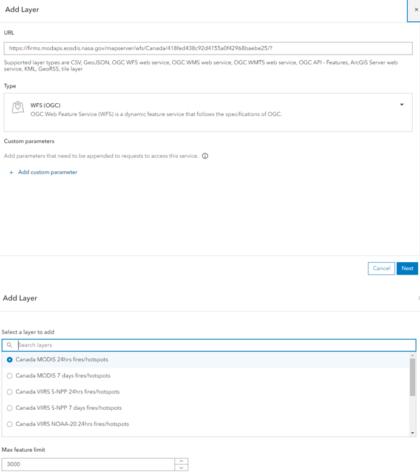
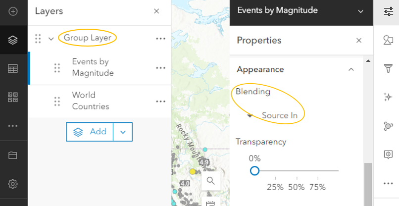

Over the past five weeks of our GEOM099 course, we explored various web technologies, with a keen eye on Geographic Information Systems (GIS) tools.
As a group, we are dedicated to enhancing disaster awareness and fostering rapid response by monitoring active natural disasters.
We focused on creating a comprehensive web interface to provide real-time data compilation on natural disasters over Canada and the US, specifically earthquakes, wildfires, and tornadoes.
We aimed to design a solution that not only aggregates and visualizes live disaster data effectively but also prioritizes ease of use for end users.
ArcGIS suite stood out for its intuitive interface and robust features. We included ArcGIS Online as for database management and web map creation, ArcGIS Dashboards to showcase data in a straightforward way, and ArcGIS StoryMaps for background information and more details.
By documenting contributions and maintaining transparent communication, we ensured a focus on user interface design throughout development.
As we near completion, we're excited to unveil our visually appealing and intuitive web platforms.
This project highlights our dedication to delivering impactful solutions that prioritize user experience and accessibility in GIS technology.
Whether you're an individual seeking to stay informed or an organization dedicated to disaster preparedness, there are numerous ways to get involved.
Explore our website to learn more about our work, initiatives, and team members.
Problem statement
Ideal
An available web platform to effectively present multiple live data feeds, focusing on real-time visualization of natural hazards, including wildfires, earthquakes, potential tornados (windspeed) in the United States and Canada.
Reality
The existing available materials lack user-friendliness and accessibility, hindering the public from obtaining and comprehending important information (live updates) regarding natural hazards.
Consequences
The public remains unaware of critical environmental concerns caused by natural hazards, and not getting time-efficient alarms, leading to long-term concerns.
Proposal
Present multiple live natural hazards data with various web platforms effectively.
Technologies
Esri Suites such as ArcGIS Online, ArcGIS Dashboard, ArcGIS Storymap.
Methodology
Our project adopted a multifaceted approach by creating web maps, and integrating dashboards and story maps to effectively address our problem statement.
Data Acquisition
To initiate our project, we undertook extensive research to acquire relevant data.
Despite encountering numerous data sources, many were limited to historical events or provided static downloads.
To ensure the continuous relevance and reliability of our information, we actively retrieved live data from ArcGIS Living Atlas.
Data Processing
Processing data directly on the web as opposed to local files and software is essential, as it allows for seamless integration of various data formats onto web platforms such as AGOL.
Additionally, by processing data online, we ensure accessibility and collaboration among team members.
We were able to process various data formats onto the web, including csv, shapefile, json/geojson (feature layer), ogc wfs/wms web service, file geodatabase, arcgis server web service, ogc api, ...(what else).
Here are some highlights of the importing process.
CSV
We published CSV files as feature layers to augment the functionality and efficacy of our solutions. ...(write more)
WFS and WMS
Utilizing WFS (Web Feature Service) and WMS (Web Map Service) was instrumental in updating the NASA FIRMS live wildfires data.
Through an URL provided by NASA, the data was integrated seamlessly into our platform, ensuring its real-time nature.
Additionally, enabling the "set refresh interval" feature ensures that the data is continuously updated at predefined intervals, maintaining its accuracy.

Table Merging
How the US and Canada data has been merged
Masking Features on a Web Map
Masking Features on a Web Map
Given that the live earthquake data source encompassed global events, masking techniques on AGOL were employed to focus solely on the US and Canada.
This ensures that our web map provides relevant and localized information to our target audience.

Web Platform Production
To enhance user experience, we implemented strategies to dynamically modify the data, including decluttering the map by toggling off unnecessary layers.
......
Concerns and Future Steps
While the NASA FIRMS wildfire data provided live updates, we encountered challenges such as including non-relevant hotspots, like industrial emissions.
In future trials, we aim to refine our data filtering techniques to enhance the accuracy of our visualizations.
Moreover, exploring scripting options to actively read updating csv files could further augment our data acquisition capabilities.
...... Things we didn't do? Things to improve?
Deliverables
We intended to deliver two primary outcomes for our project: ArcGIS Dashboards and ArcGIS StoryMaps. The dashboard featured all real-time data integrated into a single web map, offering a user-friendly interface for monitoring forest fires, earthquakes, and tornadoes across the USA and Canada.
We've enhanced the dashboard's interactivity and user-friendliness by incorporating various elements to improve data visualization
We collected real-time data from various authoritative sources. The earthquakes, forest fires, and tornadoes were from United States Geological Survey (USGS), the National Interagency Fire Center (NIFC), Natural Resource Canada (NRCan), Integrated Reporting of Wildland-Fire Information (IRWIN), and the National Oceanic and Atmospheric Administration (NOAA) respectively.
Through ArcGIS Online and ArcGIS Dashboards, we designed a user-friendly interface with interactive maps, charts, and widgets to visualize key metrics and trends in real-time. Our dashboard updated the latest information continuously, providing timely insights.
We had maps on our dashboard displaying real-time data together with various map-enhancing components. The pie chart showcased causes of forest fires in USA, and active fire stages in Canada. More forest fires information like counts and covered area size were included in tables.
The earthquake magnitude across both countries was shown in a bar graph. Storm information for the US was displayed in a line graph and a gauge. There was also a website with weather update on selected locations in Canada.
The interface design for browsing real-time data was straightforward and user-friendly.
ArcGIS StoryMaps, developed by Esri, is a versatile platform designed for users to craft engaging narratives using maps, text, multimedia content, and various other elements.
In our application of ArcGIS StoryMaps, we utilized it to showcase the current hazard conditions in both the USA and Canada. We demonstrated how we created an interactive dashboard to visualize live hazard data, illustrating the potential benefits derived from utilizing a dashboard.
The following image shows the map of the active wild fires of USA and Canada. Live data helps in early detection and monitoring of wildfires. It can help to identify areas with high risk and issue timely evacuation orders to ensure public safety.
The next image shows the map of the earthquakes of USA and Canada. Live earthquake data is crucial for early warning systems, helping emergency responders to access the magnitude and location of an earthquake rapidly.
The third image shows the map of the storms across the USA and Canada. The live data of windspeed is crucial for issuing early warnings, reducing the potential risk. It helps to access the risk to specific areas, allowing authorities to implement targeted emergency response plans.
Joshua is currently enrolled in the Geographic Information Systems: Cartographic Specialist program at Sir Sandford Fleming College – School of Environmental and Natural Resource Sciences and has recently graduated from the Conservation Biology Technician Program at the same location. These programs highlight the importance of GIS in conservation, and how to maintain conservation efforts through effective monitoring programs, healthy ecosystem management, and cyclic studies surrounding at-risk species. He has a working knowledge and understanding of ArcGIS Pro, AutoCAD, and other related software. On top of his experience in the forestry field, Joshua has also allocated time to volunteer through various board opportunities including the Frost Student Association (FSA), Fleming Bird Conservation Committee (FBCC), and the Canadian Cartographic Association (CCA). These positions have helped refine communication skills and the ability to be an effective leader, while gaining hands-on experience in a working environment.
Justin Jeff
With an advanced diploma in Mining Engineering Technology and currently working towards a graduate certificate in GIS Cartographic Specialist at Fleming College. Justin brings a foundational knowledge of the
Kawartha Highlands Provincial Park to the team as he has spent a lot of time hunting and fishing in the park boundaries. His experience was key to helping create the story map for the park and develop an effective fish stocking dashboard that rivals FishON.
Application Specialist Student,Did his bachelors in Geography from India. Youngest in the Class and is also famous for his work "Bazinga Decoding Service". Takes interest in working on Databases and lookout for challenging stuff.